来源：https://k170ac9yh31.feishu.cn/docx/Vrxrd2WLFoVULsxLZSNcFqwOnDh
我自己加入生财也快一年了，看到生财这么多航海，我自己也彻底跑通了几个项目，这次我痛下决心，付出时间，我要把生财的所有项目全部都参加一遍，找到项目的共性，让自己能够合理的监控做的项目状态，我以前就是项目经理，数据分析师。感觉只要自己去实践还是可以做出一个通用的工具的，因此本次报了15多个航海。
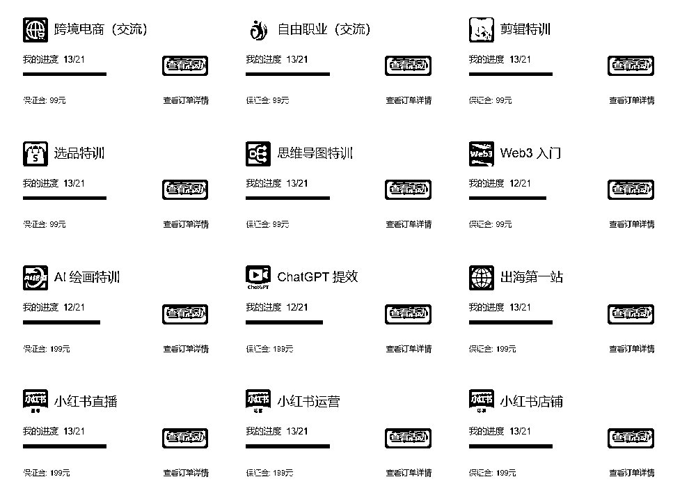
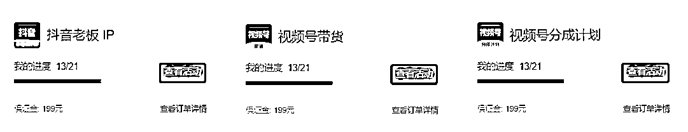
我结合了PMP相关的知识，数据分析相关知识，以及其他的工具等。做了一个方便记录状态的模板，希望能帮助大家快速在每一个项目上进行复盘，希望大家通过工具快速找到自己的不足，也方便给其他导师或者大佬进行交流。希望新的一年大家，可以去尝试每一个可能赚钱的项目，找到最适合自己的项目，早日赚到钱，而不是各种犹豫不决。
在寻找项目的时候，要尽可能的多的收集一些数据，例如项目平台、变现周期、项目收益等方面的数据，还要自己能够确定信息是不是比较准确，如果信息不够准确的话，可能会导致误判，在项目寻找的时候，还是要先收集数据，先不要管数据是不是合理，尽可能多的进行数据的收集。
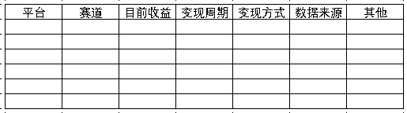
我认为收集的数据表头，如上图所示，根据自己收集的数据进行填充，在实际的操作中，发现需要添加的内容，自己也可以进行调整。
我这里用几条生财的几篇文章来做讲解：
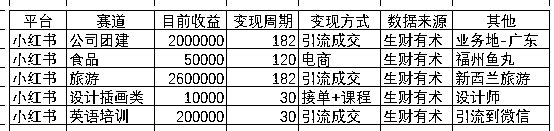
通过梳理后，能够很轻松的看到这些已经变现的项目大致情况，可以做一个简单的判断这些项目是不是符合自己的心理预期，主要项目筛选的话，我觉得主要还是针对变现周期+变现金额，进行分析。如果在这里手机对比出来的收益或者时间难以符合你的心理预期，自己就要换项目了，这个项目肯定不适合你。
前期自己一定要把我数据的质量，数据的质量决定了，一个项目的成败，以及项目可能的最大收益，或者说最小的收益，我认为在前期数据的收集的时候，如果自己身边有资源的话，建议询问一下已经跑通的，或者说身边的朋友。
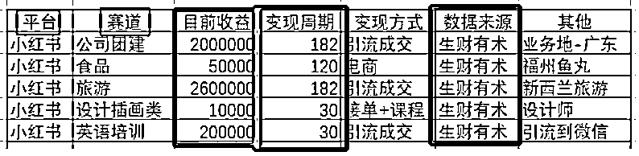
数据陷阱是因为数据收集的时候，没有找到合理的数据，在数据的收集的时候，自己也要做个判断，只有合理的数据，合理的进行分类才不会陷入辛普森悖论的陷阱。
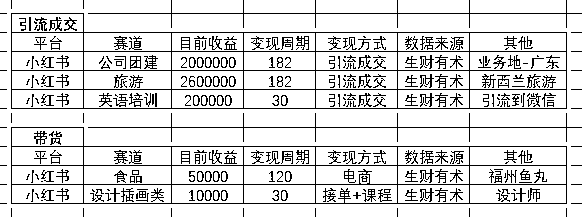
上面的业务进行分析，发现引流成交和带货等收入的收益差别太大，如果自己做笔记的话收益预计在1-5w之间比较合理；如果是引流成交的项目，收益就可能是20w左右。
如果出现一条数据，笔记的话突然有几个一下子几十万w月收入；或者说做的时间比较久的引流项目还是几w；如果分析的时候不把这些数据区分出来，很容易就陷入了数据悖论，得出的结果就不太准确。
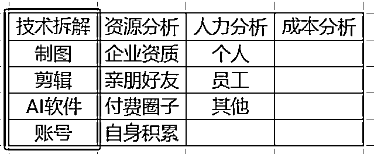
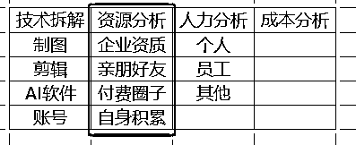
分析需要哪些资源，例如企业资质、亲朋好友、付费圈子、自身积累。
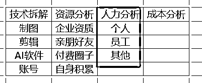
这个项目前期大概需要几个人，以及每个人大概需要每天投入多长的时间，自己心理要有个预期，这个决定了投产比，很多小项目更加考验的是人力资源，如果一个项目的话需要投入时间过多的话，就得不偿失了。
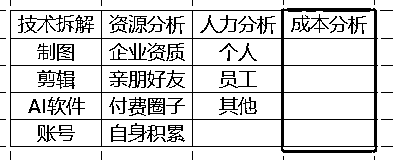
成本分析就需要考虑投入的成本费用，例如：GPT账号：20美元/月，服务器成本，付费成本等。
寻找3~5个自己的竞争对手，然后进行分析，这里的话我直接用我做的通用的表格。
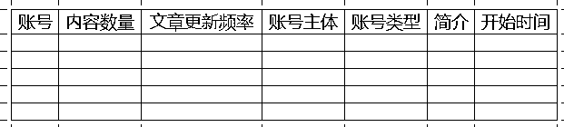
制作一个对标库，找到对标账号，分析账号的类型，更新频率，以及账号的类型，以及简介或者头像等。
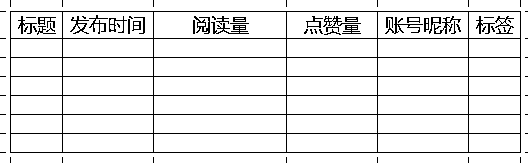
制作一个内容库，找到有些的帖子，分析阅读量，自己快速的进行模仿，最好质量高于对方，来源于对方还要高于对方。
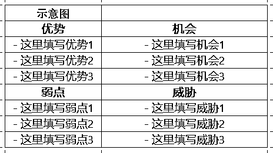
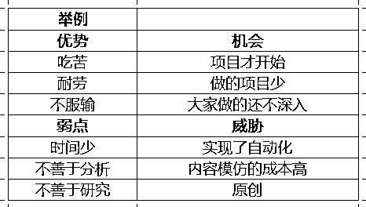
需要分析自己是不是适合做这个项目，例如需要大量的时间，自己每天工作比较忙碌，不要自己欺骗自己，说自己的时间充足等，对自己做一个合理的SWOT。
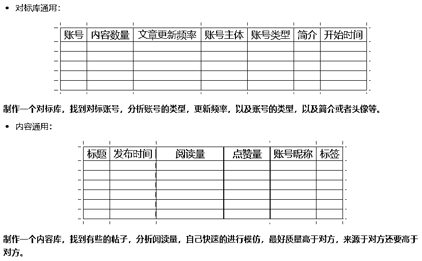
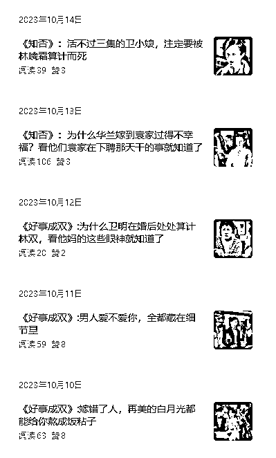
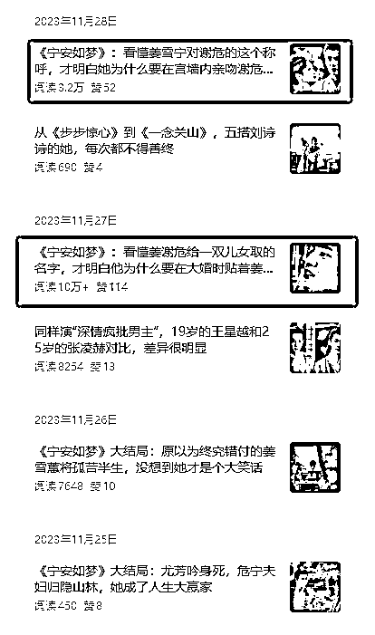
结合上面的对标库，把对标的数据进行填充，例如上面有12项数据，自己的数据越接近对方，自己成功的概率就会越大；如果要是121项数据，也就1-2项可能成功的概率就比较小了。
要么自己做创新，要么真的就是天选之子了。
收集的数据，例如上图中的数据，有些是10w+，有些是39,；一看就是极好或者极差，自己要做好自己的心理预期。找到比较平均的数据，这样才比较符合账号的大多数时候。
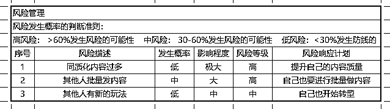
项目执行的话，我认为还是要能够客观公正的记录自己遇到的问题，而不是全都记在自己的脑子里，例如下图每天做了什么，自己遇到的问题的时候，请教别人也能够知道你遇到的问题，借鉴了《一页项目管理表》。
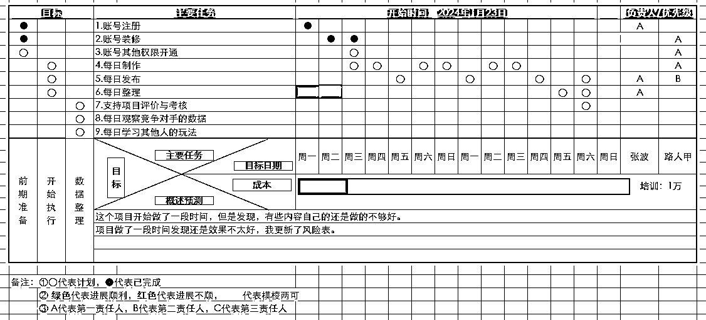
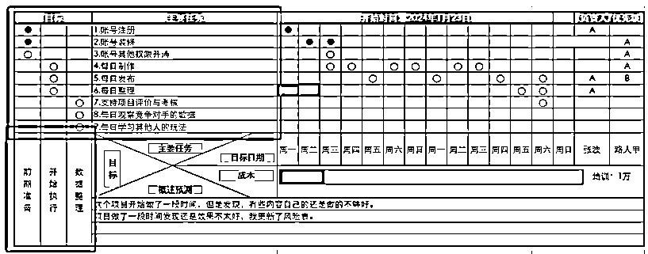
红框内容，我觉得就是在做就是WBS，直接把任务分成几个阶段，然后每个阶段要做什么事情，任务拆解的话要合理，不要把一些内容聚集到一起，尽可能按照自己的实际情况做拆解。
项目→任务→工作→日常活动，将一个大项目分解成一个个任务，将任务再分解成可以完成的工作，最后将工作分解成一次次的日常活动。
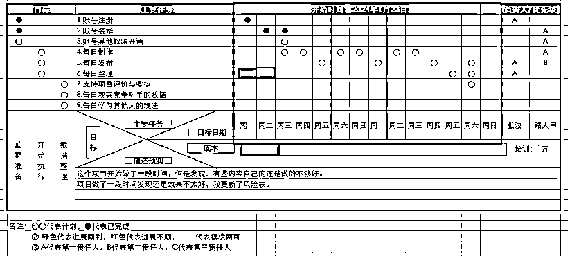
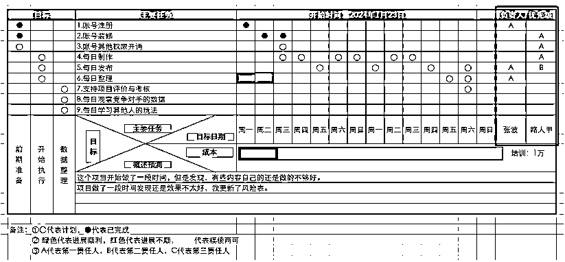
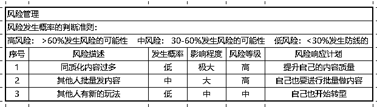
在实际做项目的时候，还得进行风险管理内容的更新，及时把我动向，找到相关的问题，而不是不撞南墙不回头的玩法，一定要及时的分析，及时的进行整理。
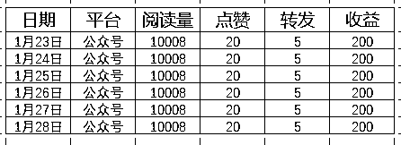
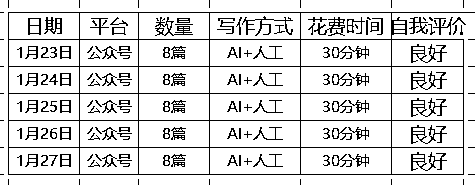
感觉收益很多，花费的时间还是比较的少，可以考虑增加账号。例如公众号爆文项目很多人在跑通了一个项目后，就考虑后期的增加账号。
开始增加内容，例如小红书笔记几篇比较好的时候，可以考虑每天多添加几条。
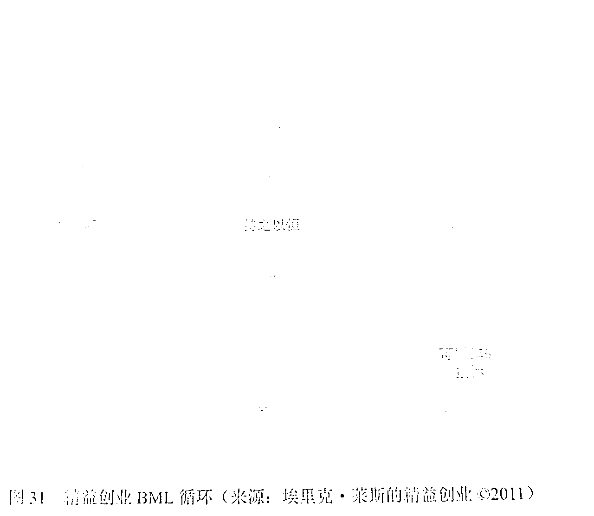
就好比这个复盘的循环模式，一旦自己迈出了第一步，就要在不断地循环中，要么自己彻底的方式，安于平淡的现状。
完整的表格请访问：